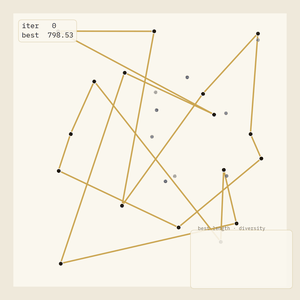
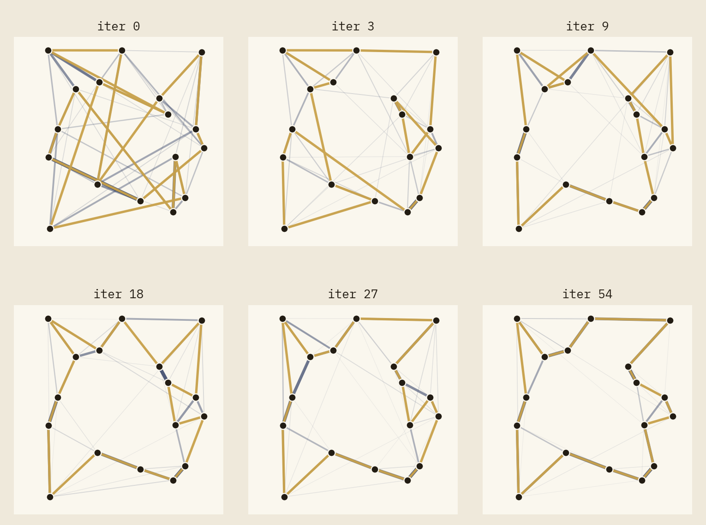
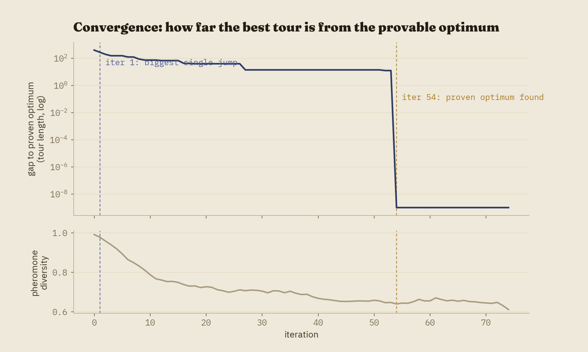
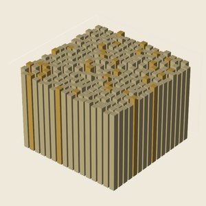

An ant laying pheromone has no plan. It isn't comparing routes, weighing tradeoffs, or remembering yesterday's trip — it's walking, semi-randomly, and leaving a chemical trail as it goes. A colony solving the Traveling Salesman Problem is thousands of these memory-less walks, repeated, with slightly-shorter walks leaving slightly-stronger trails. That a good tour emerges from this — with no individual ant ever "finding" it — is the entire premise of Ant Colony Optimization, and the second entry in this visualization series after last time's genetic algorithm.
This post walks through a from-scratch implementation of Elitist Ant System solving a 17-city instance, sized deliberately so an exact Held-Karp solver can compute the true optimal tour — every convergence claim in this post is checked against that provable answer, not against whatever the colony happened to settle on.

The rest of this post explains how a colony with no global view ends up converging on a single, provably-optimal answer — and why, just like last time, the honest hyperparameters made that happen almost immediately, which turned out to be a worse story than a slower, more deliberately-tuned one.
The idea, before the machinery
The Traveling Salesman Problem asks for the shortest closed route visiting every city exactly once. It's short to state and expensive to solve exactly — the number of distinct tours grows factorially, and no known algorithm solves every instance quickly. Ant Colony Optimization doesn't try to solve it exactly. It treats "build a plausible tour" as something many cheap, independent, slightly-random agents can do in parallel, and lets a shared, slowly-updated signal — pheromone — accumulate wherever those cheap attempts tend to agree.
The biological mechanism this borrows from is called stigmergy: coordination through the environment rather than through direct communication. No ant tells another ant anything. Each one only ever reacts to pheromone it finds already on the ground, left by ants it will never interact with directly. It's a strange amount of structure to get from agents that, individually, are doing something close to a random walk.
From ants to pheromone
Each iteration, every ant in the colony builds a complete tour, city by city, choosing its next stop probabilistically: stronger pheromone on an edge makes it more likely to be chosen, and a built-in nearness heuristic — closer cities are inherently more attractive, independent of pheromone — helps even a totally inexperienced colony build reasonable-looking tours from the very first iteration. Once every ant has finished, pheromone evaporates everywhere (a fixed fraction is simply removed), and then every ant deposits fresh pheromone along its own tour, in inverse proportion to that tour's length. Shorter tours deposit more. That's the entire learning signal.
Left alone, this is called Ant System. The Elitist variant used here adds one more step: the single best tour found so far gets an extra deposit, every iteration, regardless of whether that iteration's ants happened to rediscover it. It's the direct analogue of elitism in the genetic algorithm post — not just "protect the best answer from being lost," but actively keep reinforcing the specific choices that produced it.
Evaporation is doing more work here than it might look like. Without it, pheromone can only ever accumulate, and whichever tour an early, lucky ant stumbles onto gets reinforced forever regardless of whether a shorter one exists nearby. Evaporation is what lets the colony change its mind — it's the mechanism behind the same exploration/exploitation tension the genetic algorithm post spent a lot of time on, just implemented as forgetting instead of mutation.
The loop, formally
- Every ant constructs a complete tour via the random-proportional rule (below).
- Evaporate pheromone on every edge: \(\tau \leftarrow (1-\rho)\,\tau\).
- Every ant deposits pheromone along its own tour, proportional to \(1/\text{length}\).
- The best-known tour receives an extra "elitist" deposit.
- Track the best tour found so far.
- Repeat until an iteration budget is exhausted.
From city \(i\), the probability of moving to unvisited city \(j\) is proportional to \(\tau_{ij}^{\alpha} \cdot \eta_{ij}^{\beta}\), where \(\tau_{ij}\) is pheromone and \(\eta_{ij} = 1/d_{ij}\) is the nearness heuristic. \(\alpha\) and \(\beta\) control how strongly each signal matters; \(\beta = 0\) makes the colony ignore distance entirely and rely on pheromone alone, which — on this project's instance, within a generous iteration budget — never finds the optimum at all. The nearness heuristic isn't a minor convenience here; it's load-bearing.
A city layout with a provable answer
Seventeen cities is a deliberately small instance. Held-Karp dynamic programming solves it exactly in about two seconds — trivial as a one-time cost, even though its \(O(2^n n^2)\) complexity makes it impractical well before \(n=25\). That exactness is what lets every chart in this post plot a genuine gap to the true optimum rather than a gap to "the best this particular run happened to find," which is the same device the genetic algorithm post used with Rastrigin's known analytic minimum.
The first working version of this project solved the instance in 2 to 13 iterations,
on every one of ten seeds tried. That's an excellent result and a bad animation, for the
same reason as last time: a long, visually static tail once nothing is left to discover.
A parameter sweep isolated the cause quickly — beta was doing almost all of
the work. At beta=3, the nearness heuristic alone builds near-optimal tours
before pheromone has contributed anything, so there's barely any learning left to watch
happen. Lowering it to 0.7 (forcing more genuine reliance on accumulated
pheromone) and lowering the elitist bonus from 4 to 1 (a gentler reinforcement) pushed
convergence into a 16-to-121-iteration range, reliably, across 20 seeds swept.
The seed used throughout this post converges at iteration 54, and its middle section is the most useful part of the story: after rapid early progress — from more than double the optimal length down to within 10% by iteration 18 — it spends the next 25 iterations essentially motionless, stuck within about 3% of optimal, before finally closing the gap. The colony had, in a real sense, already found the right shape of tour well before iteration 27. What took another 27 iterations was pheromone accumulating enough on the last one or two edges that separated "very good" from "exactly optimal."

Reading the animation
The color legend carries over unchanged from the genetic algorithm post: gold is the current best answer, muted ink/gray is background, and a navy accent marks active signal — cities here, ants walking their tours. Edge width and opacity encode pheromone, but only above a threshold: at most 45 of the 136 possible edges are ever drawn, and typically far fewer once the colony commits, so the canvas never shows more candidate connections than are actually informative.

In three dimensions
TSP has no continuous landscape the way a fitness function does, so a rotating terrain shot wouldn't mean anything here. What is a genuinely three-dimensional object is the pheromone matrix itself: a value for every pair of cities, which a 3D bar chart renders directly — two city indices as the base plane, pheromone level as height.

Building this surfaced a genuine, if narrower, version of a problem the genetic algorithm
project also ran into with 3D rendering: getting the "important" bars to actually render
in front of the background ones required an explicit draw order (background first, gold
last) rather than trusting matplotlib to sort a mix of ~270 bars by depth correctly on
its own. The fix followed directly from the lesson learned last time —
ax.computed_zorder = False plus deliberate draw order — which is exactly
why that fix was pulled into this series' shared theme.py instead of being
solved twice.
Implementation notes
Three files are byte-for-byte identical to the genetic algorithm project:
viz/theme.py, utils/seeding.py, and
export/render.py. That's not an aspiration, it's a fact you can check with
diff — the reusable framework the first project in this series was
designed to leave behind actually got reused, unmodified, the first time it had the
chance to be. The single exception is setup_3d_axes, which lived inside a
landscape-specific module in the first project (despite being fully generic) until this
project needed it too; it now lives in the shared theme.py, and that fix
was carried backward into the genetic algorithm project as well, so both copies stay
identical.
One bug is worth describing rather than just fixing quietly: edge prominence was originally normalized against the min/max pheromone of just the drawn edges. At iteration 0, before any ant has walked, pheromone is perfectly uniform — zero spread — which degenerated into "every candidate edge gets maximum brightness," the opposite of the calm, nothing-differentiated-yet look the design was supposed to produce. It was caught by checking pixel-level edge density across frames before ever presenting a render, not after noticing the video looked busy. The fix measures prominence against the fixed initial pheromone level instead of the current frame's own spread, so an undifferentiated state correctly draws nothing.
Computational complexity
Per iteration, the dominant cost is tour construction: \(m\) ants, each making \(n\) sequential choices, each choice an \(O(n)\) weighted sample over remaining cities — \(O(m n^2)\) per iteration. Pheromone evaporation and deposit are \(O(n^2)\) and \(O(m n)\) respectively, dominated by construction for any reasonable ant count. Over \(g\) iterations, total work is \(O(g \, m \, n^2)\). The one-time Held-Karp solve is a separate \(O(2^n n^2)\) cost, paid once per problem instance regardless of how many times ACO itself is run against it — at \(n=17\) that's roughly two seconds, dwarfing the search itself, which completes in under a second.
Strengths and weaknesses
The strengths: no derivative or convexity assumption needed (same as the genetic algorithm), naturally suited to graph and routing problems where the search space is inherently combinatorial rather than continuous, trivially parallelizable across ants within an iteration, and the elitist mechanism gives the same monotonic best-ever guarantee as elitism did last time, despite the underlying search remaining stochastic.
The weaknesses, again demonstrated rather than just asserted: convergence speed is
wildly hyperparameter-sensitive — 2 iterations or 121, same algorithm, same instance,
differing only in beta and the elitist weight — and the nearness heuristic
that makes this instance tractable is itself a form of problem-specific engineering that
won't exist for every combinatorial problem ACO gets applied to. Removing it
(beta=0) meant the colony never found the true optimum within a generous
budget on this exact instance. ACO also inherits the general metaheuristic weakness of
no convergence guarantee in bounded time, though the Elitist variant's monotonic
best-ever tracking means it degrades gracefully rather than catastrophically — you
always keep the best answer found, even if you can't guarantee how good that answer is.
Extensions
A few natural next steps: Ant Colony System's pseudo-random-proportional rule and local pheromone updates (a stronger, more exploitation-heavy variant worth animating side by side with this post's Elitist Ant System); MAX-MIN Ant System, which clamps pheromone to a fixed range specifically to prevent the kind of premature, permanent commitment this post's sweep occasionally produced; a larger instance paired with a heuristic lower bound (a minimum spanning tree, say) once exact solving via Held-Karp stops being practical; and a multi-colony variant with occasional pheromone exchange between otherwise-independent colonies, which would visualize nicely as several pheromone maps evolving mostly separately.
Code and reproducibility
A full reference implementation — the algorithm, the exact solver, every visualization module, the render scripts used to produce every figure and animation in this post, and a 37-test pytest suite (including the Held-Karp solver checked against independent brute-force enumeration) — is available at github.com/akavosi/ant-colony-optimization.
References
- Dorigo, M., Maniezzo, V., & Colorni, A. (1996). Ant System: Optimization by a Colony of Cooperating Agents. IEEE Transactions on Systems, Man, and Cybernetics, Part B, 26(1), 29-41.
- Dorigo, M., & Gambardella, L. M. (1997). Ant Colony System: A Cooperative Learning Approach to the Traveling Salesman Problem. IEEE Transactions on Evolutionary Computation, 1(1), 53-66.
- Held, M., & Karp, R. M. (1962). A Dynamic Programming Approach to Sequencing Problems. Journal of the Society for Industrial and Applied Mathematics, 10(1), 196-210.